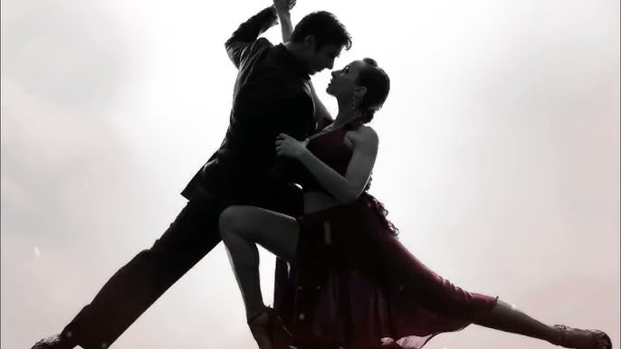

 Tango nuevo je hudební styl, který rozšiřuje tradiční tango o nové prvky. Piazzolla experimentoval s rytmem, harmonií i formou skladby. Do aranžmá přidával prvky moderní hudby, které tradiční publikum zpočátku odmítalo. Jeho přístup však postupně získal uznání díky inovativnosti a emocionální síle. Tango nuevo se dnes hraje po celém světě.
Styl se vyznačuje technickou náročností a silným dramatickým výrazem. Hudebníci musí zvládnout neobvyklé rytmické změny a komplikované fráze. Piazzolla kladl důraz na přesnost i výrazovou svobodu. Díky tomu vznikly skladby, které zaujmou jak odborníky, tak široké publikum. Tango nuevo se stalo symbolem moderní argentinské hudby.